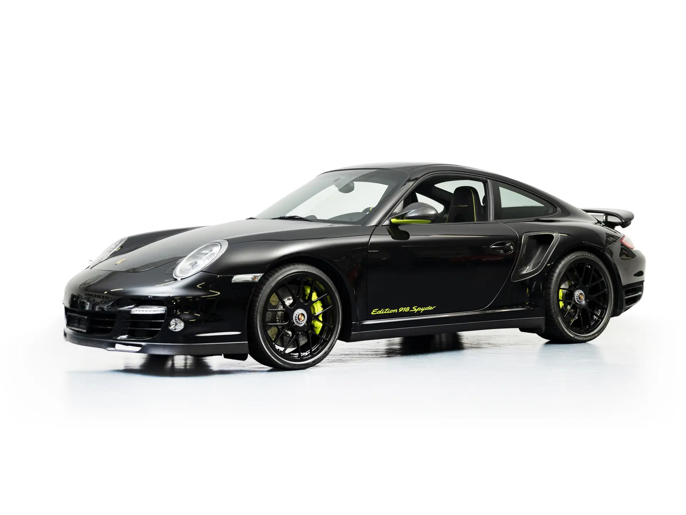

Following the grand unveiling of the Porsche 918 Spyder at the 2013 Frankfurt Motor Show, the furore around the German marque’s new plug-in hybrid supercar began to reach boiling point. Those lucky enough to place a deposit for their own 918 Spyder were forced to wait for cars to roll off the Zuffenhausen production line, with deliveries scheduled to begin in December 2013. To appease buyers who could bear the wait no longer, Porsche offered the next-best alternative. The 911 Turbo S ‘Edition 918 Spyder’ was announced and offered only to 918 Spyder customers. The special edition 911 would be built alongside the 918 Spyder and shared the same production run total with only 918 examples built. Available in either coupé or cabriolet form, the ‘Edition 918 Spyder’ shared the underpinnings of the popular 997-generation 911 Turbo S. The same 3.8-litre twin-turbocharged flat-six engine could be found at the rear of the car, mated to a seven-speed PDK transmission and delivering a factory-claimed power output of 523 brake-horsepower. The key differentiating features of the ‘Edition 918 Spyder’ were its cosmetic subtleties that make this such a rare and significant version of the 911. Most noticeably, the limited-edition car deploys hints of Acid Green on the exterior badging, brake callipers, and door mirrors. Inside, the same shade of green is used on seat piping and stitching, and is also found on the instrument dials, steering wheel, and door sills. A plaque affixed to the dashboard denotes that this limited-edition example is numbered “034”. Built in 2011 for the North American market, the car was delivered to Porsche of Omaha, Nebraska. The dealership completed its pre-delivery checks in August 2011 prior to the car being acquired by its first owner in Texas, who is thought to have kept the Porsche until October 2018. Its second owner registered the car in Los Angeles, prior to its subsequent sale and return to Europe in 2019. Offered for sale with 22,417 kilometres on its odometer at the time of cataloguing, the 911 is accompanied by selected Porsche books and manuals. While it would certainly prove the ideal stablemate to its hybrid supercar namesake, the Porsche 911 Turbo S ‘Edition 918 Spyder’ is a devastatingly quick and hugely capable car in its own right, and will surely appeal to anyone seeking a superbly presented, low-mileage example of this landmark sportscar.
 contact us